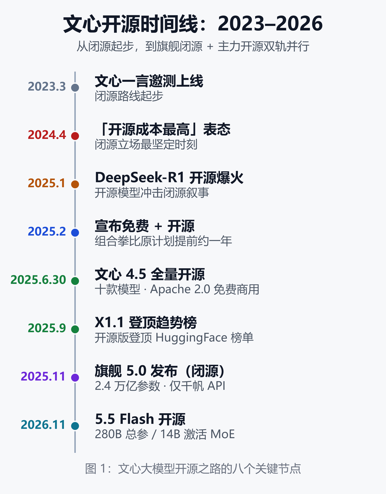
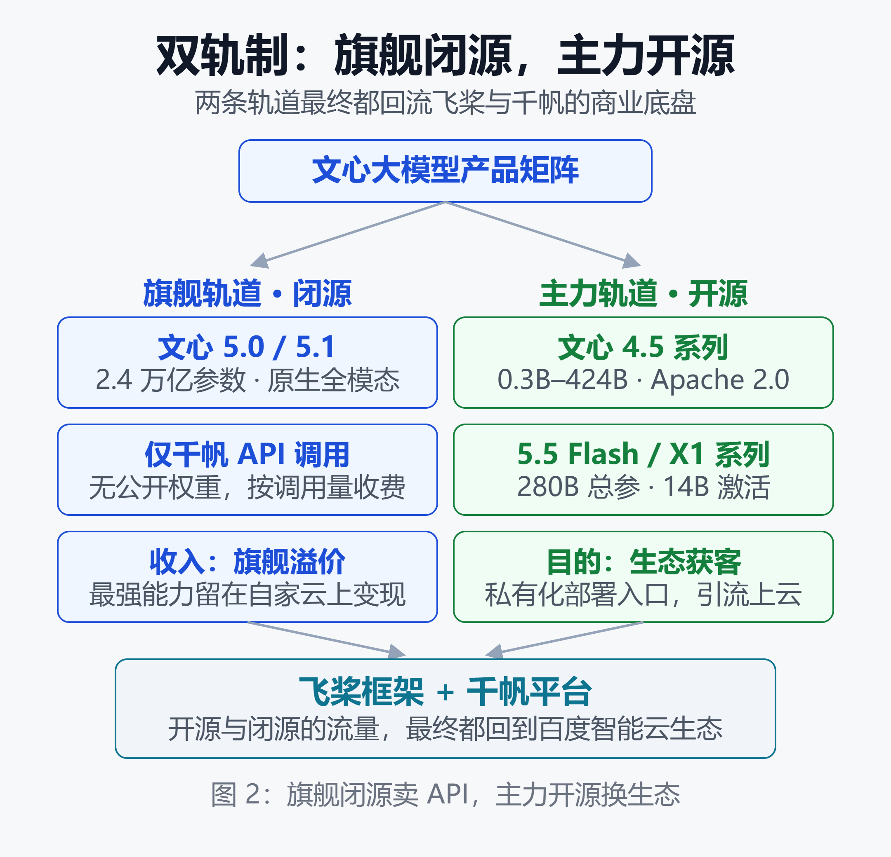

从「开源成本最高」到主动开源：百度文心战略转身始末
序言：十四个月，一百八十度
2024 年 4 月，李彦宏在内部讲话中把话挑明：文心大模型不开源，理由是「闭源模型能力会持续领先」。同年 Create 大会上他又补了一句：大模型领域，开源实际上是成本最高的。
十四个月后的 2025 年 6 月 30 日，文心 4.5 系列十款模型以 Apache 2.0 协议全量开源，权重、代码、工具链一次放齐。再往后，2025 年 11 月旗舰 5.0 保持闭源，2026 年 11 月 5.5 Flash 开源，「旗舰闭源、主力开源」的双轨格局正式定型。
从闭源阵营的旗手，到国内大厂里开源动作最密集的玩家之一，中间只隔着一个 DeepSeek。这场转身的时间线、模型能力与商业账本，值得完整复盘一遍。
一、2024 年的百度：闭源逻辑的三段论
要理解后来的转向有多大，得先看当年立场有多坚定。2024 年的李彦宏几乎是国内「闭源有理」的代言人，其论证可以概括为三段：
- 能力论：同等参数规模下，开源模型能力不如闭源；开源要追平闭源，就得堆更大的参数规模。
- 成本论：更大的参数意味着更高的推理成本和更慢的响应速度，所以「开源实际上是成本最高的」。
- 商业论：真正的商业应用应该选闭源，闭源才能持续拿到真金白银的投入。
这套逻辑在 2024 年并非没有道理。彼时开源阵营的标杆 Llama 3 与闭源的 GPT-4o 确实存在代差，国内模型还在追赶阶段，闭源收费是最顺的商业路径。百度也确实靠这条路把文心一言做成了国内最早商业化的对话产品之一。
但三段论有一个隐含前提：闭源模型必须一直领先。一旦开源阵营追上来，甚至用十分之一的价格提供九成的能力，整套论证就会瞬间反噬。
二、转折点：DeepSeek 冲击波
2025 年 1 月，DeepSeek-R1 开源并爆火，直接击中了三段论的软肋。一个开源模型在推理能力上逼近顶级闭源模型，训练与推理成本却低一个量级，全球开发者一周内把它推上了各大趋势榜。
对百度的冲击是双重的。用户盘上，文心一言的市场份额被豆包、DeepSeek、通义千问持续挤压；叙事盘上，「闭源才能领先」的故事讲不下去了。百度自家产品文小言随后接入了 DeepSeek-R1，被外界视为最直接的信号。
然后是著名的四十八小时。2025 年 2 月 13 日，百度宣布文心一言自 4 月 1 日起全面免费；2 月 14 日，百度再宣布文心 4.5 系列将在 6 月 30 日开源，后续文心 5.0 也将择机开源。
据路透社报道，这一免费加开源的组合拳比百度原计划提前了约一年。李彦宏在同期的表态里也松了口：开源有利于大模型的传播与生态建设。从「开源成本最高」到「开源利于生态」，口径的转变只用了一个春节的时间。
三、2025 年 6 月 30 日：十款模型一次放齐

上图是文心从闭源起步到双轨并行的完整时间线，2025 年 6 月 30 日的 4.5 系列开源是整个故事的分水岭。
这次开源的诚意超出外界预期。十款模型一次性放出，覆盖从端侧到旗舰的全档位，全部采用 Apache 2.0 协议，允许无限制商用：
| 分档 | 代表型号 | 定位 |
|---|---|---|
| 轻量档 | 0.3B、21B-A3B | 端侧与低成本 |
| 主力档 | 300B-A47B | 对标 DeepSeek-V3 |
| 多模态 | VL 系列 | 图文视频理解 |
主力档的 300B-A47B 是稀疏 MoE 架构，总参数 3000 亿，每个 token 只激活 470 亿参数，推理效率明显高于同能力的稠密模型。轻量档 21B-A3B 激活参数仅 30 亿量级，是专为高并发、低成本场景准备的。
配套也没含糊：训练工具链 ERNIEKit 同步开源，全部基于百度自研的飞桨框架。换句话说，百度放出的不只是权重，还有一条「模型 + 框架 + 工具」的完整国产技术栈。
四、开源模型能力几何
放得开是一回事，打不打得过是另一回事。文心 4.5 开源后的表现可以从三个层面看。
基准层面，官方口径显示 ERNIE-4.5-300B-A47B 在 28 个主流基准中的 22 项超越 DeepSeek-V3-671B，指令遵循（IFEval）与知识问答（SimpleQA）等任务领先明显。当然这是厂商自报数据，选型时应以自有任务的实测为准。
第三方视角，DataLearner 的评测指出：文心 4.5 在传统基准上表现很强，但在高难度挑战性测试上表现一般。这与它的定位一致——扎实的主力模型，而非冲击前沿的旗舰。
生态接受度是最有说服力的一环。2025 年 9 月，基于 21B-A3B 训练的深度思考模型文心 X1.1 发布，开源版本 ERNIE-4.5-21B-A3B-Thinking 登顶 HuggingFace 文本模型趋势榜，实现了「开源即登顶」。2025 年 11 月，ERNIE-4.5-300B-A47B 登上智源安全榜开源模型第一，是唯一进入全球前三的开源模型；12 月，多模态的 ERNIE-4.5-VL-28B-A3B-Thinking 又拿下视觉语言方向的榜单第一。
一个曾经坚持闭源的团队，开源半年内在文本、安全、多模态三个方向都拿到过榜首位置，说明 4.5 系列不是清库存式的应付，而是能打的产品。
五、有趣的转折：旗舰 5.0 反而闭源
故事到这里如果按惯性发展，应该是「百度全面拥抱开源」。但 2025 年 11 月的 Baidu World 大会上，剧情出现了第二次转折。
文心 5.0 发布：总参数 2.4 万亿，是目前国内公开参数规模最大的通用大模型；原生全模态统一建模，文本、图像、音频、视频的输入输出一体化；超稀疏 MoE 架构，激活参数比例不到 3%。在 LMArena 榜单上，文心 5.0 Preview 一度登顶，创意写作与复杂指令执行超过 Claude-Opus-4.1、GPT-5.2 等一众旗舰。
而这款最强的模型，没有开源。截至本文写作时，文心 5.0 与后续的 5.1 均未放出公开权重，只能通过千帆平台 API 调用，官方也未公布开源时间表。

上图概括了这套双轨制的结构：旗舰闭源卖 API，主力开源换生态。把最强的能力留在自己的云上按调用量收费，把足够好的能力开源出去换开发者与企业客户，两条轨道最终都回流到飞桨框架与千帆平台的商业底盘上。
这不是百度一家的选择。开源换生态、闭源保收入的双轨制，正在成为国内外大厂的通用打法，阿里的通义千问同样走「开源全家桶 + 闭源旗舰 API」的路线。
六、2026 年 11 月：5.5 Flash 开源，双轨定型
2026 年 11 月，双轨制的开源一侧迎来了新一代产品。11 月 5 日，百度开源 ERNIE 5.5 Flash Base 基座模型；11 月 11 日 Baidu World 期间发布首个后训练版本 5.5 Flash Preview；11 月 24 日，Flash Preview 也正式开源供下载。
5.5 Flash 的规格单非常清晰：
- 总参数 2800 亿，激活参数仅 140 亿，延续超稀疏 MoE 路线
- 预训练数据 33.5 万亿 token
- 支持 100 万 token 长上下文
- 编程、Agent、知识工作、深度研究四项能力重点优化
3D 建模是发布会上的亮点演示：模型可以用代码编排镜头、对卡音乐、调用 Blender 等渲染工具，直接输出可编辑的成片。这标志着开源侧的能力重点已经从「对话」转向「操工具做事」，与行业整体的 Agent 化趋势同频。
至此，文心的产品矩阵分工明确：2.4 万亿参数的 5.x 旗舰闭源输出最强能力，4.5 全系列与 5.5 Flash、X1 开源覆盖企业与开发者市场。开源不再是应对危机的应激动作，而是产品战略的固定组成部分。
七、百度为什么想通了：三层账本
复盘整个时间线，百度的开源决策可以拆成三层账本。
第一层是用户盘，DeepSeek 是导火索。 免费加开源的组合拳比原计划提前一年落地，直接原因是市场份额被开源对手快速蚕食。对 C 端产品而言，「收费的略好」打不过「免费的好用」，这是 2025 年春节后所有闭源厂商的共同认知。
第二层是生态盘，开源是最好的获客入口。 Apache 2.0 无限制商用，企业可以放心私有化部署。企业先用开源版本验证场景，规模上来后再购买千帆平台的托管推理、微调工具与企业支持——这是云厂商验证了二十年的经典路径。权重开源得越彻底，飞桨框架和百度智能云的潜在客户就越多。
第三层是行业盘，模型能力本身正在商品化。 当开源模型的能力普遍达到「够用」线以上，闭源 API 的溢价空间就被持续压缩，直接卖模型访问权不再是好生意。收入重心转向云基础设施与应用层，开源反而成了最优解。行业数据也支撑这个判断：2026 年 HuggingFace 春季报告显示，中国研发的开源模型占平台下载量的 41%，首次超过美国的 36.5%；工信部口径下，中国 AI 开源大模型全球累计下载量已突破 100 亿次。开源已是主流市场，缺席的代价远大于参与。
小结：转身之后
把时间线压缩成一句话：2024 年论证闭源有理，2025 年 2 月被 DeepSeek 逼到牌桌前，2025 年 6 月全量开源 4.5 系列，2025 年 11 月用闭源的 5.0 保住旗舰溢价，2026 年 11 月用开源的 5.5 Flash 把双轨制焊死。
这场转身里没有多少理想主义，更多是生意逻辑的切换：当模型的稀缺性消失，就卖稀缺性消失之后仍然稀缺的东西——云、工具链、企业信任。从这个角度看，李彦宏 2024 年的「开源成本最高」和 2025 年的全面开源并不矛盾，前提变了，结论自然跟着变。
对选型的读者，建议很直接：旗舰 5.x 的能力需要通过千帆 API 评估价格与效果；开源侧的 4.5 系列与 5.5 Flash 权重可直接下载，拿自己的业务数据测一遍，再做取舍。
免责声明
本文基于公开信息整理，模型基准成绩多为厂商自报口径，实际表现因任务与数据而异。文中涉及的公司战略分析属于基于公开信息的推断，不构成投资建议。
参考来源
- 21 世纪经济报道 —— 李彦宏重申文心大模型不开源
- 财联社 —— DeepSeek 爆火后百度宣布文心开源
- 第一财经 —— 免费了，开源了，李彦宏为什么变了
- 量子位 —— 李彦宏重新拥抱开源
- The Decoder —— Baidu releases open source model family ERNIE 4.5
- VentureBeat —— Baidu's new ERNIE 4.5 model is open for enterprise use with Apache 2.0
- 知乎 —— ERNIE-4.5-300B-A47B 基准测试表现
- DataLearner —— 文心 4.5 第三方评测
- 品玩 —— ERNIE-4.5-300B-A47B 登智源安全榜开源第一
- 量子位 —— 文心 X1.1 深度思考模型发布
- 量子位 —— 2.4 万亿参数原生全模态，文心 5.0 一手实测
- 百度官方博客 —— ERNIE-5.0-Preview-1103 登陆 LMArena
- 新华网 —— 文心 5.0 正式版上线
- 开源中国 —— 百度发布 ERNIE 5.5 Flash Base
- 新浪财经 —— 文心 5.5 Flash Preview 正式开源
- 凤凰网 —— 33.5 万亿 Token 喂出来的文心 5.5
- 华尔街见闻 —— 中国开源模型下载量超越美国
- 澎湃新闻 —— 中国开源大模型下载量全球第一
相关阅读
- 2026 年开源大模型最新选型指南：Kimi K2.6 / DeepSeek V4 / Qwen 3.6 / Llama 4 / MiniMax M2 / GLM-5.1 六大模型深度对比
- 开源不赚钱，那阿里图什么？拆解通义千问「开源—云—电商 Agent」三级变现逻辑
推荐搭配装备
善其事，利其器。以下硬件能最大化你的AI体验👇
🔗 通过以上链接购买可支持本站持续运营 🙏